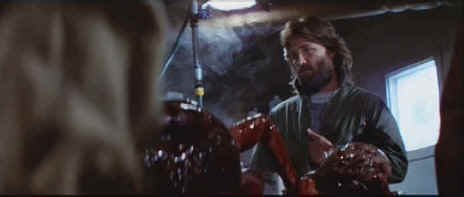

Universal/1982/109m/WS 2.35
The setting is a bleak Arctic observation station. A madman arrives at the camp attacking members of a research team for no apparent reason and is killed. An investigation reveals the man had been working at another bleak ice covered site where a huge crater was discovered in the ice. The ramifications of the visit continue to build as one by one the scientists at the station are attacked and killed. What or who is the killer becomes the shifting focus of the group. Suspicion shifts with each new incident. Finally, all eyes turn on MacReady, the tough-minded helicopter pilot. The operative factor here is don’t turn your back on anyone.
 |
Kurt Russell as MacReady, another fine role from Carpenter ©Universal |
Carpenter assembled an
excellent team to make The Thing. Dean Cundey’s blue-tone photography creates
a chilling atmosphere and his camera movement adds to the chills. The Ennio Morricone
score compliments the stalking images to perfection. And the creature effects, while they
may have borrowed heavily from an Alien inspiration, are slimy and add the right
amount of disgust. Bill Lancaster’s (yes, Burt’s son) adaptation from the short
story is outstanding. And Carpenter is at his best directing The Thing. The pacing
is perfect, the cuts magnify and maintain suspense. The actors stay within their
characters.
Kurt Russell gets another terrific role from John Carpenter as
MacReady. In another life this MacReady could have been Snake Plisken, another plum
Russell role created by Carpenter. Russell keeps a strong center of gravity in the central
role. The supporting actors seem to be having a pretty good time in this tough location
shoot. Wilfred Brimley does a nice mad scientist bit and Donald Moffat maintains an aloof
presence as Garry.
The elements have been peaked too much in this transfer causing
edge artifacts, especially in scenes depicting solitary figures against the Arctic
landscape. Shadow detail is somewhat obscured by a less than robust contrast ratio. The
peaking may have been the result of a choice between extracting sharper or cleaner images
from the given elements. Cundey’s ice-blue tones are maintained nicely in the color.
The Dolby Digital 5:1 surround sound contains robust bass information and involving
surround effects.
The Thing is delivered by Universal in a nice special
edition DVD. Running audio commentary by John Carpenter and Kurt Russell is consistently
enjoyable providing insights into the production challenges. Commentaries are often best
when there is more than one principal and they communicate effortlessly. This is the case
on The Thing. A documentary created for the special edition runs almost eighty
minutes providing additional details about the production. This special edition is chock
full of goodies including outtakes, storyboards and a photo album.